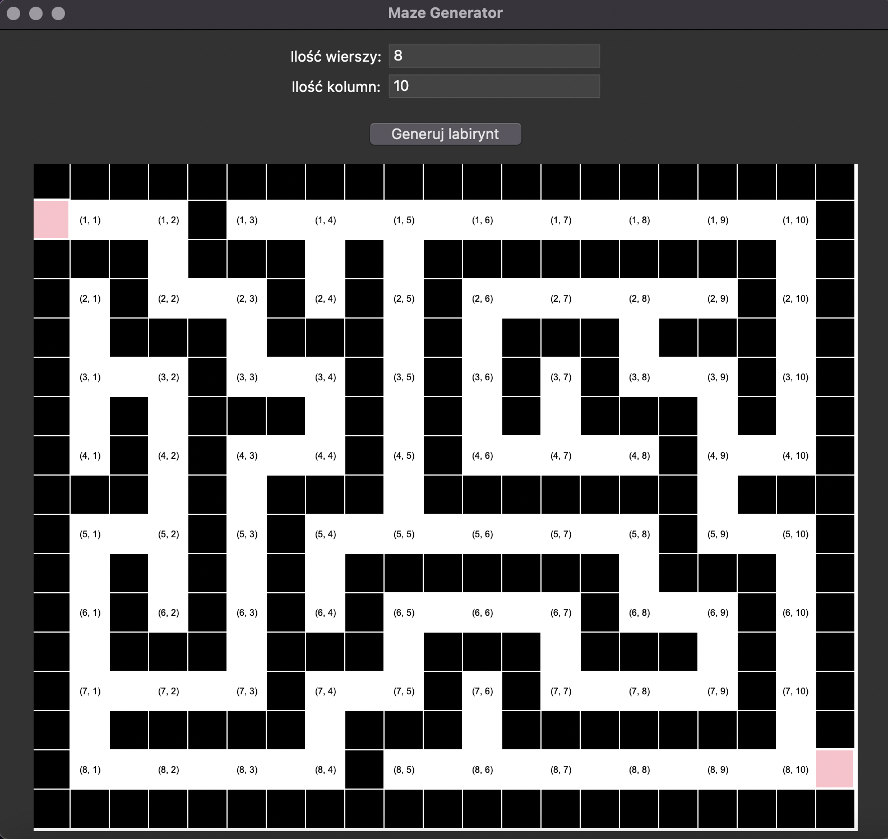
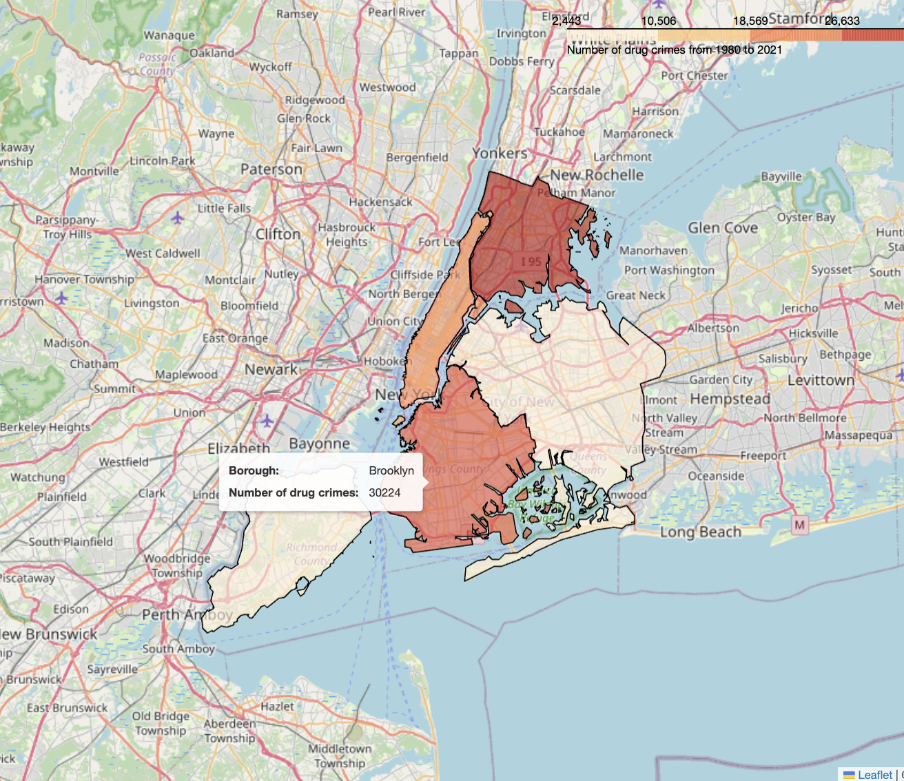
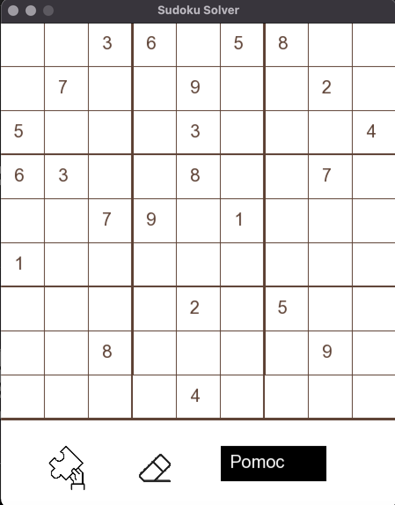

Featured projects
PS. Clicking on a project title redirects to its GitHub repository.
Maze Generator
A desktop app that creates random mazes in real time based on user-defined size.
Tech: Python, Tkinter
Hover over the image to see the screenshot!
NYC Crime Map
A team project analyzing and visualizing NYC crime data to explore patterns across the boroughs.
Tech: Python, pandas, BeautifulSoup4, matplotlib, seaborn, folium
Hover over the image to see the screenshot!
Vehicle CO₂ Emission Prediction
Regression models predicting vehicle CO₂ emissions using physical specifications.
Tech: Python, NumPy, pandas, scikit-learn, matplotlib
Polynomials Library
A lightweight library for representing polynomials and performing common operations.
Tech: Python, unittest
Sudoku Solver
A desktop app that automatically solves valid Sudoku puzzles.
Tech: C++, SFML
Hover over the image to see the screenshot!
Clinic Registration System (In Progress)
A team project building an automated clinic registration and management system.
Tech: Java, Spring Boot, Docker, PostgreSQL, HTML/CSS, JavaScript
Amazon Reviews Sentiment Prediction
Two prediction models of varying complexity to classify reviews as positive or negative, with a comparison of their performance.
Tech: Python, NumPy, pandas, scikit-learn